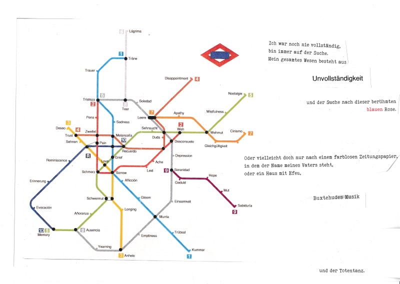
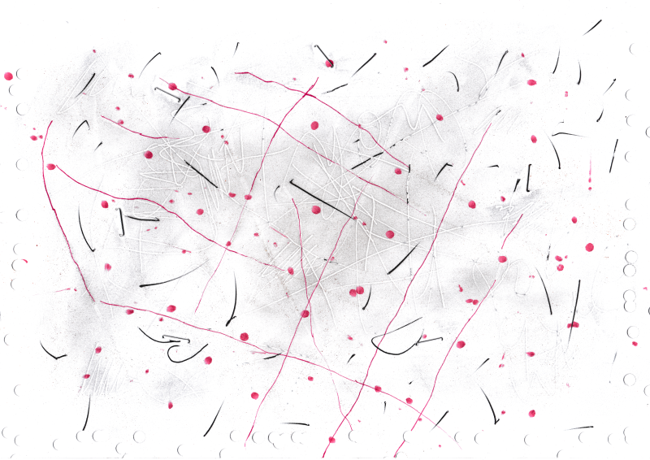
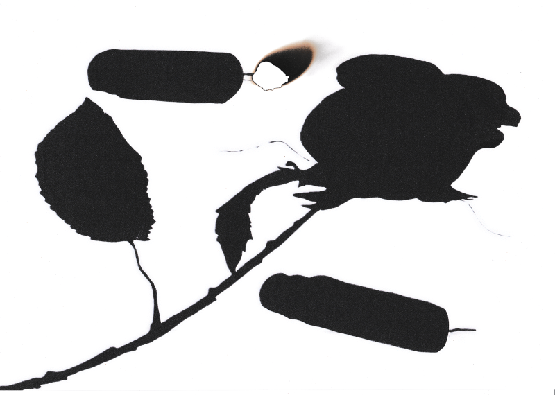

These five images are the visual component of the interdisciplinary project "Five Stages of Healing" on the theme of emotional healing. The starting point is the end of a romantic relationship and the exploration of the five stages of grief, based on Elisabeth Kübler-Ross's model, which I adapted to the process of heartbreak. While analysing my own thoughts and emotions during this time, an internal artistic dialogue emerged, combining poetry, painting, and music. The five images that resulted from this process serve as emotional material for the musical improvisation, reflecting the chaotic and cyclical nature of healing. They invite both the participating musicians and the audience to reflect on their own experiences of loss and acceptance.
1. Fragen
Coffee Stain

2. Gedanken
Mapa de la Tristeza
3. Vorwurf
Tackern und Lochern
4. Mutlosigkeit
The pounds of sadness and Lil' Ghost

5. Selbstwirksamkeit
It's ok, shadow
Poems
Five Stages of Healing
A few years ago, I was introduced by Volkhardt Preuß, during one of his renowned seminars – in this case on Monteverdi's Orfeo – to the five stages of the Annunciation of Mary. What fascinated me most was how Renaissance painters and thinkers used these five theological chapters as a foundation to explore fundamental human emotions and depict artistic approaches to the unexpected. This is described in remarkable detail in Michael Baxandall's book Painting and Experience in Fifteenth-Century Italy.
Even back then, I noticed the thematic similarity between the Annunciation of Mary and the five stages of grief. However, at the time, I only knew the latter as a cliché within popular culture. A good example of this is Trevor, the violent, brutal, yet strangely fascinating character from the video game GTA 5. He mentions "Denial" as "the first stage of the grieving process" when delivering the news to a rival biker gang that he has brutally killed one of their members.
Years later – in the aftermath of the disappointing and unexpected end of a brief but intense romantic relationship – I recalled this five-stage model. I decided to approach my heartbreak analytically in hopes of gaining some insight into this psychological journey, which has so often consumed so much of my energy, pain, and effort throughout my life. In a short time, a five-part constellation of emotional states and thought patterns emerged from the experiences and reflections I noted down. With a few adjustments, this constellation aligned surprisingly well with the five stages of grief.
I firmly believe that art is often another medium – another playing field – for experiencing the processes of "life" and the essence of existence parallel to life itself, in an aesthetic form. Through art, we can partially re-experience what we have already felt internally, but from other perspectives – often through the lens of other people, as art is fundamentally a collective phenomenon. At the same time, art provides a portal to emotional landscapes and experiences we will never encounter in reality – but what does "reality" even mean? At its best, this process of (re)experiencing leads to an insight into existence itself. Such insight need not be purely rational; it can serve as spiritual water for the soul, bringing "Fried und Freud" (peace and joy). This is why I believe art can be profoundly therapeutic – both for the creators and, ideally, for its audience.
Thus, the step from analysing my emotions and thoughts during heartbreak to creating an artistic expression was a small one. Even during the process of writing things down, I began composing short poems or collecting emotional imagery – for instance, when I suddenly noticed, while hanging up laundry, how a memory pierced me like a sharp sting of frustration. Or when I opened the empty mailbox – admittedly with a touch of wounded pride – and had to acknowledge that a faint hope still lingered in me, that everything might still turn out alright.
This is how these five pieces came into being, portraying and accompanying the process of healing in the context of heartbreak. I do not consider them artworks in the traditional sense of paintings, as I lack the skill of a painter, but rather as a kind of graphic notation or a foundation for music – a prompt for improvisation.
I experienced this heartbreak not only as an emotional journey but also through analysing and documenting my feelings and thoughts, and most of all through painting, writing poetry, and improvising in connection with the five stages of grief. After studying deeper the psychological theory of Elisabeth Kübler-Ross, its original author, I came to understand that this process is not linear – as is often suggested by visualizations of the five stages as a curve. Instead, it is a deeply chaotic phenomenon. The stages, with their distinct characteristics, intermingle over time, occur simultaneously, return to earlier stages, and lead to ever-changing emotional states and insights.
On a smaller scale, healing is a constantly repeating cycle. And yet, on a larger scale, there is a process that ideally culminates in the never-ending step of acceptance. From acceptance springs self-efficacy – that uniquely human ability to trust in one's inner resources and abilities to overcome any traumatic experience.